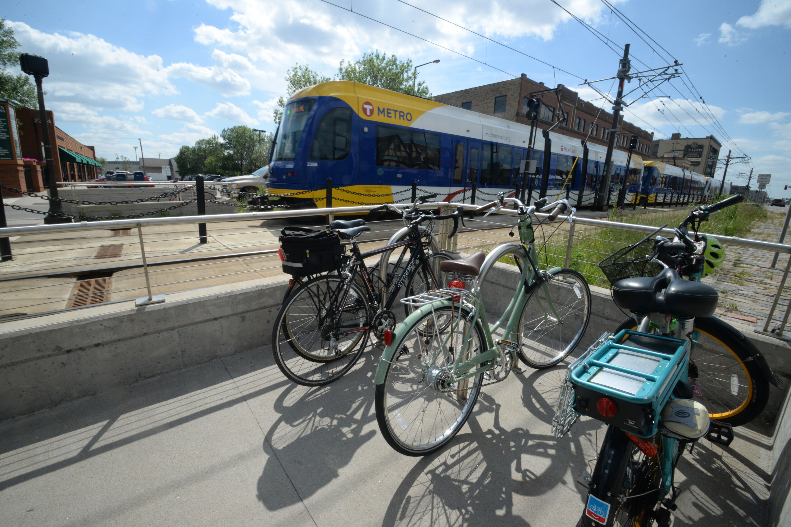
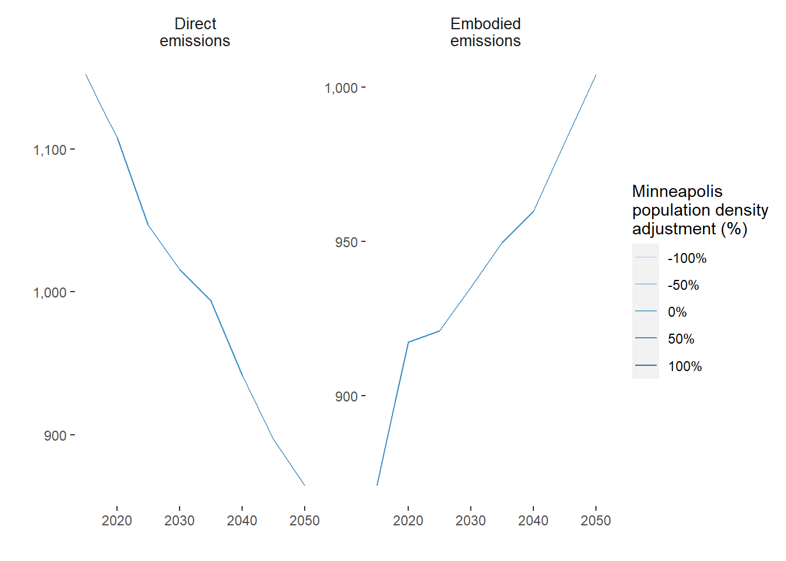
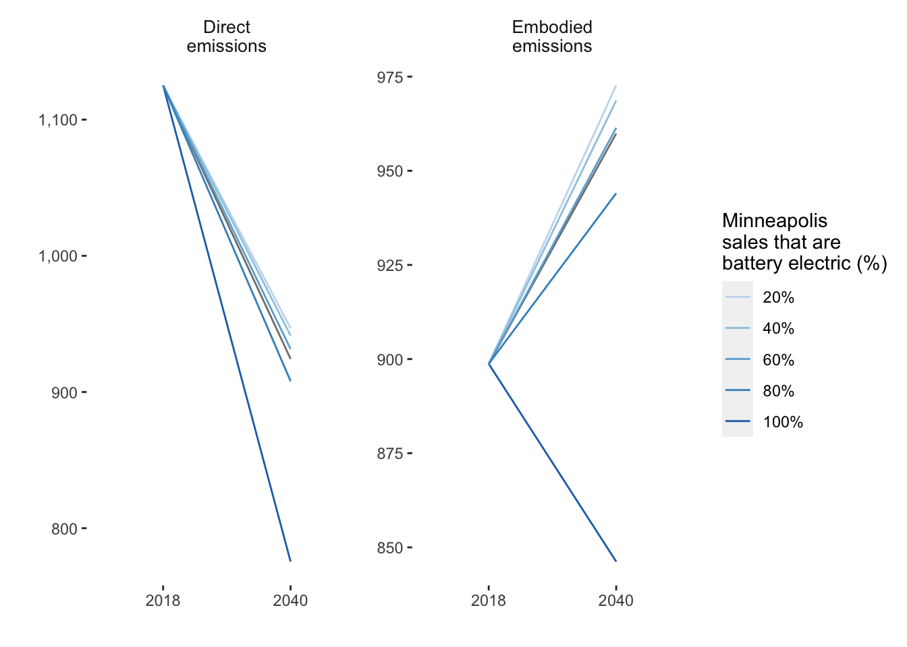
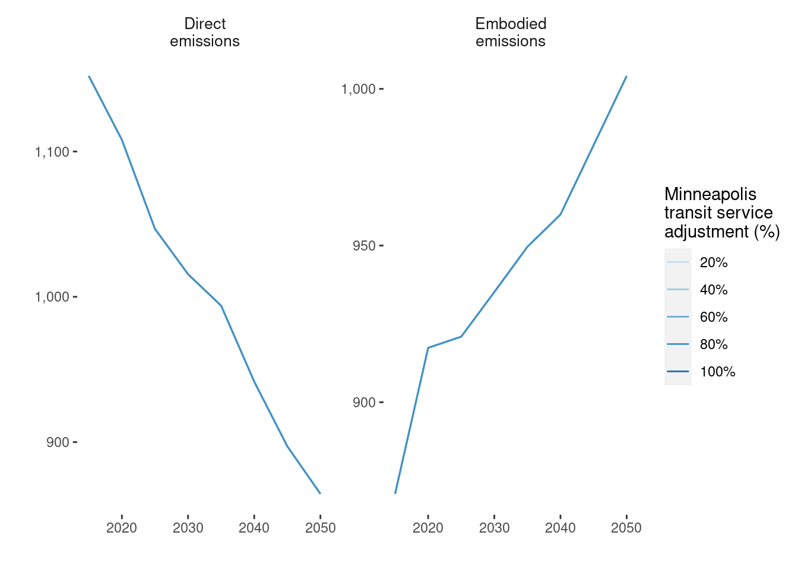
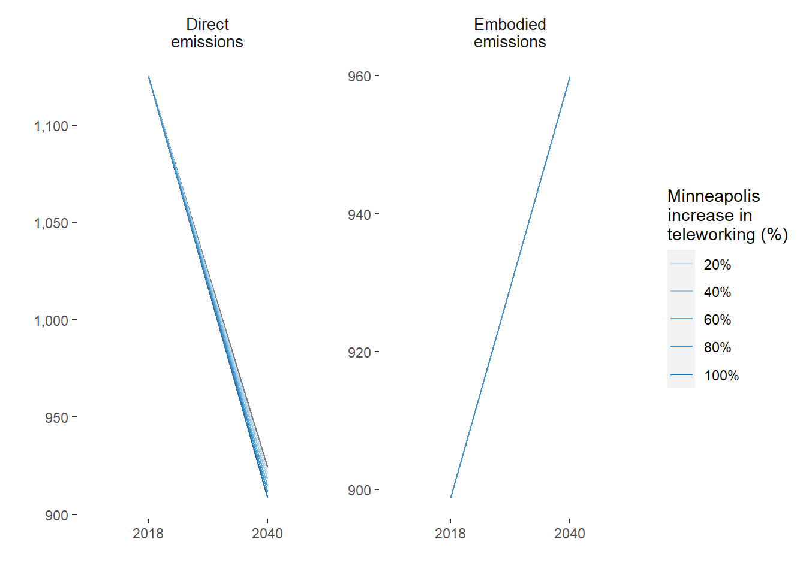
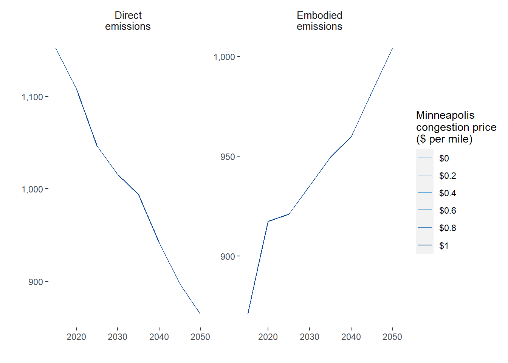

4 Transportation

The Metropolitan Council Transportation Policy Plan notes that the rapid expansion of the region’s developed area in an “auto-centric” manner has resulted in longer average trips and the diminished attractiveness of non-auto modes as modes of regional travel. The issue of longer and more frequent automobile trips contributes to the challenge of reducing greenhouse gas emissions.
Instead, when land use and transportation systems are designed to work together, they can create more efficient and sustainable communities. For example, compact, walkable communities with a mix of land uses can reduce the need for driving and improve the transportation system’s efficiency.
4.1 Framework
Ramaswami, Fang, and Tabory (Ramaswami, Fang, and Tabory 2020) provide a framework for urban planning tools for greenhouse gas (GHG) mitigation as shown in as four key levers of action based on the framework developed in previous work by the UN International Resource Panel (Swilling et al. 2018).
It is found that transit and car-sharing become cost-effective beyond a density of 35 dwelling units per acre (Santasieri 2014) and 5-10 dwelling units per acre (Millard-Ball 2019), respectively.
4.2 Transportation Baseline and Data
The Council is in the process of verifying data sources for all inputs and values.
The inputs for the transportation sector baseline and forecast are:
- Passenger Miles Traveled (PMT) forecasts from Metropolitan Council Regional Transportation Demand Model (RTDM).
- The Transportation Demand Model A transportation demand model is a tool that is used to predict how people and goods will move within a transportation system. It can be used to forecast the demand for different modes of transportation, such as cars, buses, trains, and planes, and to evaluate the impacts of different transportation policies and investments.
- Average vehicle occupancy by mode
- MA3T stock turnover and adoption forecasts by “powertrain”: SI (spark ignition gasoline) vehicles, CI (combustion emissions diesel) vehicles, hybrid-electric vehicles (HEVs), plug-in hybrid-electric vehicles (PHEV), and battery-electric. MA3T stands for Market Acceptance of Advanced Automotive Technologies (MA3T) and it allows to simulate the diverse purchasing behaviors among individuals in the market place.
4.2.1 Annual Energy Outlook (AEO)
In addition to the inclusion of the strategies outlined, alternative future scenarios are adopted from the EIA Annual Energy Outlook.
The inclusion of these scenarios allows the user to easily consider uncertainty in global financial and energy markets. The AEO scenarios are included as variations in fuel economy and VMT by mode. The following AEO scenarios are included in the tool (“Annual Energy Outlook” 2021).
- High oil price the price of Brent crude oil, in 2020 dollars, reaches $173 per barrel by 2050 compared with $95 per barrel in the reference case.
- Low oil price the price of Brent crude oil, in 2020 dollars, drops to $48 per barrel by 2050 compared with $95 per barrel in the reference case.
- High economic growth U.S. GDP grows by 2.6% per year compared with 2.1% in the reference case.
- Low economic growth U.S. GDP grows by 1.6% per year compared with 2.1% in the reference case.
The AEO analysis includes two additional scenarios representing high and low renewable cost cases, respectively. We do not consider these cases as we rely on Xcel Energy electricity grid forecasts in the tool and variation in renewable prices would affect these assumptions.
4.2.2 Passenger
The Twin Cities region relies heavily on private cars for transportation, with options including gasoline, diesel, hybrid electric-gasoline, plug-in hybrid electric-gasoline, and battery electric vehicles.
The region’s transportation carbon emissions are calculated based on data on vehicle usage, average vehicle occupancy, and person miles traveled by mode. Public transit options include urban and interurban buses and rails, with the option to switch to electric power in the future. Public transit mode shares are estimated using definitions from the 2019 Travel Behavior Inventory (TBI), but there are no estimates of transit vehicle turnover to the 2050 forecast year.
The dominant mode of passenger transportation in MSP is the private car (i.e., passenger light-duty vehicle). Powertrain types included in the tool for this mode are gasoline, diesel, hybrid electric-gasoline (HEV), plug-in hybrid electric-gasoline (PHEV), and battery electric (BEV).
Public transit modes are categorized as urban bus, bus rapid transit (BRT), urban rail (LRT), and interurban rail (Northstar commuter rail). Bus modes have fuel options of biodiesel, hybrid electric-biodiesel, and battery electric. The LRT is already run by electricity and it is assumed that use of this technology will continue. The Northstar commuter rail currently uses biodiesel as an energy feedstock, but the option is available in the tool to switch it to an electric powertrain by 2050.
In the case of PHEV, there is a need to consider the fraction of VMT driven in electric and gasoline modes. It is assumed that the average travel distance in electric mode for a PHEV is 30 miles (Loveday 2019) and that households only recharge vehicles at night. Using these assumptions, the fraction of time operating in gasoline mode can be estimated based on 2019 TBI data for household vehicle usage for each CTU.
The regional model provides PMT totals for auto, transit, bike, and walk modes. PMT by mode is allocated to CTU using the standard 100-50-50 method given in the GHG Protocol for Cities (The World Resources Institute 2012). That is, 100% of PMT for trips that start and end in the same CTU is allocated to that CTU. Otherwise, 50% of PMT is allocated to each of the trip start CTU and trip end CTUs. A factor of 340 is used to convert daily PMT into annual PMT based on the recommendation of the Carbon Free Boston study (Porter, Chang, et al. 2019a).
4.2.3 Freight
The Twin Cities region is a critical transportation hub for the upper Midwest, serving as a distribution center for Minnesota, Wisconsin, North and South Dakota, and eastern Montana. The region is served by five modes of freight transportation: trucks, railroads, barges, air freight, and pipelines. These modes play a crucial role in supporting the region’s economic competitiveness and quality of life by allowing residents to access the goods and materials they need and enabling businesses to distribute their products.
The region’s freight transportation system is facing challenges, including congestion, lack of capacity, and infrastructure deficiencies, which need to be addressed to ensure the system’s continued effectiveness. The Metropolitan Council works closely with the Minnesota Department of Transportation and other partners to ensure that the regional freight system supports a thriving and sustainable economy. Many freight-related improvements are the responsibility of private owners and operators of transportation modes and freight terminal facilities, although public investments in infrastructure also play a role.
4.3 Transportation Baseline and Forecast
| Mode | 2018 | 2040 |
|---|---|---|
| Passenger light duty vehicle | 3,879,556 | 3,669,647 |
| Active transportation (walk and bike) | 316,757 | 347,165 |
| Urban bus (standard, non-BRT bus) | 220,289 | 241,437 |
| Bus rapid transit | 5,126 | 5,618 |
| Urban rail | 78,635 | 86,183 |
| Intercity rail | 12,707 | 13,927 |
| Walk | 105,340 | 133,347 |
| Bike | 67,247 | 71,290 |
| School bus | 37,683 | 53,755 |
| Mode | 2018 | 2040 |
|---|---|---|
| Combined unit truck | 684,122.58 | 937,773.0 |
| Single unit truck | 228,815.33 | 313,652.6 |
| Freight rail | 1,876,341.80 | 1,996,576.3 |
| Multi-modal freight (combination of truck and rail) | 441,925.81 | 655,486.4 |
| Air freight | 7,867.95 | 20,451.3 |
| Water freight | 0.00 | 0.0 |
Embodied emissions are a significant but often overlooked aspect of reducing carbon emissions in transportation from manufacturing and maintaining vehicles and infrastructure. Different vehicles and modes of transportation have different levels of embodied emissions. The GHG Tool in this study estimates embodied emissions for various types of passenger vehicles, public transit, and school buses based on an analysis by Chester and Horvath ((Chester and Horvath 2009)) and other sources. The tool considers the emissions resulting from manufacturing, maintenance, tire production, and other factors over the vehicle’s lifetime. It does not currently estimate embodied emissions for freight vehicles as data on their stocks and sales is not available for the study area.
4.3.1 Land Use
Transportation and land use policies are reliant on each other. Segregated and low-density land use patterns lead to a reliance on automobiles, increased vehicle miles traveled, and decreased efficacy of shared travel. However, altering land use policy is complex and only sometimes leads to changes in land use, as construction takes time to catch up with zoning. The scenario planning model uses the “five D’s” (population and employment density, diversity of land uses, street design, distance to transit, and destination accessibility) as the land use factors that affect transportation.
The Metropolitan Council Transportation Policy Plan discusses the need for communities to consider the connections between land use and transportation as the region changes in the coming years. The plan mentions that it is not feasible to expand the highway system in a sustainable manner and that there is increased private investment in already developed parts of the region along transit lines. The Transportation Policy Plan also mentions that higher-density development and redevelopment occur in already-developed areas. That new growth is happening in suburban edge and emerging suburban edge communities, which stresses the regional highway system. The plan suggests that planners incorporate multimodal travel options, such as transit, walking, and biking, into land use and design to address issues like congestion, climate change, equity, and livability.
About this strategy Increasing density decreases travel distances and encourages transit, cycling, and walking. We estimate a 0.4% decrease in auto VMT for a 10% increase in population density by 2040, a 7% increase in walking/cycling VMT for a 10% increase in population density by 2040, and a 7% increase in transit VMT for a 10% increase in population density by 2040.
| Land Use Adjustment | Multiplier relative to BAU | Effect on miles traveled by 2050 |
|---|---|---|
| Drive | ||
| Population density | +10% | -4% |
| Employment density | +10% | +0% |
| Land use diversity | +10% | -9% |
| Intersection design | +10% | -12% |
| Job accessability by transit | +10% | -20% |
| Distance to transit | -10% | -5% |
| Walk | ||
| Population density | +10% | +7% |
| Employment density | +10% | +4% |
| Land use diversity | +10% | +15% |
| Intersection design | +10% | -6% |
| Job accessability by transit | +10% | -6% |
| Distance to transit | -10% | +15% |
| Transit | ||
| Population density | +10% | +7% |
| Employment density | +10% | +1% |
| Land use diversity | +10% | +12% |
| Intersection design | +10% | +29% |
| Job accessability by transit | +10% | +12.8% |
| Distance to transit | -10% | +29% |

| Mode | 2018 Baseline | 2040 Business-as-Usual | 2040 Scenario |
|---|---|---|---|
| Bike | 0.00 | 0.00 | 0.00 |
| School bus | 1.01 | 1.33 | 1.33 |
| Urban bus (standard, non-BRT bus) | 50.70 | 51.72 | 63.86 |
| Passenger light duty vehicle | 1,069.93 | 883.89 | 792.31 |
| Intercity rail | 0.17 | 0.18 | 0.22 |
| Urban rail | 3.78 | 4.49 | 5.54 |
| Walk | 0.00 | 0.00 | 0.00 |
4.3.2 Vehicle Electrification
Vehicle electrification is widely recognized as a central pillar of transportation decarbonization (Sustainable Development Solutions Network and Sachs 2020). The effectiveness of this strategy relies on a combination of market uptake and decarbonization of the electricity grid. Both factors are considered in the tool, as outlined in subsequent sections. Focus is placed on the personal vehicle fleet but a partial consideration is given to the on-road freight fleet.
4.4 EV market penetration
It was found that the estimate for EV penetration by 2020 is high compared with what is observed in the county totals for that year. The model predicts 4,920 PHEV and BEV vehicles in 2015 and 97,091 such vehicles in 2020 for the seven-county region. For comparison, the Alternative Fuels Data Center (AFDC) only shows 4,740 registered vehicles in 2018 (AFDC 2018) and MnDOT shows 17,146 registered electric vehicles in 2020 (MnDOT 2020).
The Greenhouse Gas Scenario Planning Tool aims to assess the potential impact of electric vehicles on greenhouse gas emissions in the Twin Cities metropolitan region.
The Tool also accounts for the fact that plug-in hybrid electric vehicles may operate in both electric and gasoline modes, and estimates the fraction of time that these vehicles operate in each mode based on the average distance that they can travel on electric power and data on household vehicle usage. The tool aims to provide insight into the potential for electric vehicles to reduce GHG emissions in the region and inform policy decisions related to electric vehicle adoption.

Figure 4.1: Comparing the direct and embodied greenhouse gas emissions between years 2018 and 2040 for different percentages of vehicles sales which are battery electric.
| Mode | 2018 Baseline | 2040 Business-as-Usual | 2040 Scenario |
|---|---|---|---|
| Bike | 0.00 | 0.00 | 0.00 |
| School bus | 1.01 | 1.33 | 1.33 |
| Urban bus (standard, non-BRT bus) | 50.70 | 51.72 | 51.72 |
| Passenger light duty vehicle | 1,069.93 | 883.89 | 873.82 |
| Intercity rail | 0.17 | 0.18 | 0.18 |
| Urban rail | 3.78 | 4.49 | 4.49 |
| Walk | 0.00 | 0.00 | 0.00 |
4.4.1 Public Transit
According to the Minneapolis Transportation Action Plan (TAP), transit is essential for the city’s multimodal transportation system. Transit contributes to economic competitiveness by attracting businesses, private investment, and top talent. Over 30,000 (16.5%) households in the city do not have access to or choose not to own a personal car, with the highest concentration of car-free individuals living in neighborhoods around downtown Minneapolis. The TAP aims to improve the coverage, speed, and reliability of transit service through a partnership with the Metropolitan Council and by defining clear priorities, goals, and actions for the city. The goal is to increase the number of transit trips from 13% in 2019 to 25% by 2030. Transit must be convenient, reliable, and frequent and effectively reduce trips made by single-occupancy vehicles to achieve these goals.

bau_ctu %>%
ungroup() %>%
left_join(transportation_index$modes[2:3], by = c("mode" = "mode_abbrev")) %>%
filter(
year %in% c("2018", "2040"),
type == "direct"
) %>%
pivot_wider(
names_from = year,
values_from = emissions
) %>%
select(
`Mode` = mode_description_1,
`2018 Baseline` = `2018`,
`2040 Business-as-Usual` = `2040`
) %>%
left_join(transitservice_ctu %>%
ungroup() %>%
left_join(transportation_index$modes[2:3], by = c("mode" = "mode_abbrev")) %>%
filter(
year %in% c("2040"),
type == "direct",
scenario == "ts60"
) %>%
pivot_wider(
names_from = year,
values_from = emissions
) %>%
select(
`Mode` = mode_description_1,
`2040 Scenario` = `2040`
)) %>%
tableformat(.,
.caption = paste("Emissions in tonnes CO2e - 60% increase in transit service", params$ctu_selection)
)## Joining with `by = join_by(Mode)`| Mode | 2018 Baseline | 2040 Business-as-Usual | 2040 Scenario |
|---|---|---|---|
| Bike | 0.00 | 0.00 | 0.00 |
| School bus | 1.01 | 1.33 | 1.33 |
| Urban bus (standard, non-BRT bus) | 50.70 | 51.72 | 72.41 |
| Passenger light duty vehicle | 1,069.93 | 883.89 | 849.84 |
| Intercity rail | 0.17 | 0.18 | 0.25 |
| Urban rail | 3.78 | 4.49 | 6.28 |
| Walk | 0.00 | 0.00 | 0.00 |
4.4.2 Telework
The most recent studies that also include energy associated with working from home find a effective reduction of 2.5-2.8% in household CO2 emissions per day. (Kim, Choo, and Mokhtarian 2015)
At a first approximation, telework eliminates commute VMT. However, the net effect on VMT and household GHG production is less clear. Individuals who work from home tend to make additional non-commute trips during their additional discretionary time (Mokhtarian 2009) Other household members also can use the now available vehicle for their commute (potentially switching away from transit) or for other trips.
Finally, working from home introduces additional requirements on household energy consumption: more daytime heating and, potentially, the need for a larger dwelling to provide space for a home office. The most recent studies that also include energy associated with working from home find an effective reduction of 2.5-2.8% in household CO2 emissions per telework day. (Fu et al. 2012)
An important secondary question regarding telework is its market potential. It is estimated that about 35 percent of jobs in the United States can be performed from home full-time (Dingel and Neiman 2020). Prior to the COVID-19 pandemic, time use data for the United States indicates that less than a quarter of workers worked from home, and most spent less than half their working hours at home. The portion of jobs that can be done from home varies by metropolitan area. In MSP, approximately 38 to 52 percent of jobs can be done fully through telework (Dingel and Neiman 2020).
We estimate a 2.75% decrease in personal vehicle miles traveled for each person-day of telework.

bau_ctu %>%
ungroup() %>%
left_join(transportation_index$modes[2:3], by = c("mode" = "mode_abbrev")) %>%
filter(
year %in% c("2018", "2040"),
type == "direct"
) %>%
pivot_wider(
names_from = year,
values_from = emissions
) %>%
select(
`Mode` = mode_description_1,
`2018 Baseline` = `2018`,
`2040 Business-as-Usual` = `2040`
) %>%
left_join(telework_ctu %>%
ungroup() %>%
left_join(transportation_index$modes[2:3], by = c("mode" = "mode_abbrev")) %>%
filter(
year %in% c("2040"),
type == "direct",
scenario == "t60"
) %>%
pivot_wider(
names_from = year,
values_from = emissions
) %>%
select(
`Mode` = mode_description_1,
`2040 Scenario` = `2040`
)) %>%
tableformat(.,
.caption = paste("Emissions in tonnes CO2e - 60% increase in people teleworking", params$ctu_selection)
)## Joining with `by = join_by(Mode)`| Mode | 2018 Baseline | 2040 Business-as-Usual | 2040 Scenario |
|---|---|---|---|
| Bike | 0.00 | 0.00 | 0.00 |
| School bus | 1.01 | 1.33 | 1.33 |
| Urban bus (standard, non-BRT bus) | 50.70 | 51.72 | 51.72 |
| Passenger light duty vehicle | 1,069.93 | 883.89 | 857.03 |
| Intercity rail | 0.17 | 0.18 | 0.18 |
| Urban rail | 3.78 | 4.49 | 4.49 |
| Walk | 0.00 | 0.00 | 0.00 |
4.4.3 Precedents
The number of workers who teleworked at least one day per month grew in Minnesota from 18 percent in 1994 to 24 percent in 1997. As early as 1999, one-third of 200 surveyed businesses reporting allowing their employees to telework. Comparing a private firm and public agency implementation of telework in Minnesota, Wells et al. (Wells et al. 2001) found that the private firms implemented telework to recruit skilled workers while the public agency was responding to budget constraints.
An interesting analysis by the International Energy Agency found that, if everyone in the world who can work from home did so one day per week, it would reduce annual GHG emissions (transportation+residential) by 24.2 Mt CO2e - roughly equivalent to the annual emissions in Greater London (or about 0.07% of global emissions) (Crow and Millot 2020).
While not a large magnitude reduction, this result indicates that telework should be considered in the suite of decarbonization strategies.
Also, we do not have a clear precedent for the widespread adoption of telework. It may be the case that such a policy would encourage diversification of land uses in suburban communities as residents seek out the urban amenities they previously found near their workplace (e.g., restaurants and shopping opportunities near their home). These changes would potentially encourage additional VMT reductions through the benefits of the 5Ds of urban form (Larson and Zhao 2017).
4.4.4 Road Pricing
Road pricing is likely to be an important component of transportation policy going forward. It provides a clear signal to travelers about the cost of driving and contains its own revenue stream. Finally, road pricing provides an alternative revenue stream to the gas tax as vehicle efficiency increase and EV adoption grows.
The scenario planning model includes three alternatives for road pricing. The first is a vehicle miles traveled (VMT) fee that charges for each mile of travel. The second is a pay-as-you-drive insurance plan. Finally, the model includes a representation of congestion pricing. Ideally, congestion price should vary between the time of day and road link based on the current congestion level, but this is unfeasible to model.
Instead, an elevated VMT fee is applied to a portion of travel, approximating the percent of congested VMT. This method is similar to a the Carbon Free Boston (CFB) study (Porter, Chang, et al. 2019b). Credit-based congestion pricing is recommended as a revenue-neutral strategy to address equity in road pricing. It provides credits to travelers who shift their travel model or departure time.
readr::read_csv("data/road_price_effects.csv", show_col_types = FALSE) %>%
rowwise() %>%
mutate(across(c(3, 4), function(x) {
ifelse(x != "NA",
paste0(ifelse(x >= 0, "+", ""), x * 100, "%"),
x
)
})) %>%
unique() %>%
gt::gt(
id = "road-price-effects",
caption = "Road pricing values",
rowname_col = "`Road pricing adjustment`",
groupname_col = "Mode"
) %>%
gt::opt_row_striping() %>%
gt::tab_options(row_group.font.weight = "bold")| Road pricing adjustment | Multiplier relative to BAU | Effect on miles traveled by 2050 |
|---|---|---|
| Drive | ||
| Passenger vehicle miles traveled fee | +10% | -2% |
| Gas tax/fee | +10% | -1% |
| Congestion tax/fee | +10% | -1% |
| Pay as you drive insurance fee | +10% | -2% |
| Parking fees | +10% | -7% |
| Walk | ||
| Passenger vehicle miles traveled fee | +10% | +1.3% |
| Gas tax/fee | +10% | NA |
| Congestion tax/fee | +10% | +1.3% |
| Parking fees | +10% | +1% |
| Transit | ||
| Passenger vehicle miles traveled fee | +10% | +1.3% |
| Gas tax/fee | +10% | NA |
| Congestion tax/fee | +10% | +1.3% |
| Pay as you drive insurance fee | +10% | +1.3% |
| Parking fees | +10% | +1% |
| Freight | ||
| Freight vehicle miles traveled fee | +10% | -2.5% |
readr::read_csv("data/road_adj_values.csv",
progress = F,
show_col_types = F
) %>%
gt::gt(
id = "road-price-adj-values",
caption = "Road pricing adjustment values",
rowname_col = "`Road pricing adjustment`"
) %>%
gt::opt_row_striping() %>%
gt::tab_footnote("Congestion pricing typically higher than baseline vehicle miles traveled fee", locations = gt::cells_body(1, 4))| Road pricing adjustment | Default value | Acceptable range |
|---|---|---|
| Passenger vehicle miles traveled fee | $0.00 | $ 0.03 - 0.25 per mile |
| Freight vehicle miles traveled fee | $0.00 | $ 0.03 - 0.25 per mile |
| Pay-as-you-drive insurance fee | $0.00 | $ 0.066 per mile |
| Congestion pricing1 | $0.00 | $ 0.03 - 0.25 per mile |
| 1 Congestion pricing typically higher than baseline vehicle miles traveled fee | ||
4.4.4.1 Vehicle miles traveled (VMT) fee
A study by MAPC (Gately and Reardon 2021) in Massachusetts uses a combination of the VisionEval transportation model and UrbanSim land use model to examine land use and pricing scenarios. The introduction of a 25 cent per mile VMT fee is anticipated to lower VMT by 15%. They find that even a tripling of the gas tax from 24 cents per gallon to 75 cents per gallon would only slow VMT growth by 1.5%. The study results indicate the Commonwealth region cannot rely solely on technology-based solutions such as fuel efficiency and electrification to meet ambitious GHG reduction targets.
However, these results are highly dependent on the choice of elasticity and marginal cost. It is also important to note the variation in elasticity obtained in different jurisdictions.
Recently, Spiller et al. (Spiller et al. 2014) estimated the price elasticity of VMT at -0.511, which is on the higher end of the range found in the literature. Their higher estimate is partially due to the consideration of multi-vehicle households switching to more fuel-efficient vehicles in response to increases in fuel price. In the case of a VMT fee, this option would not be available to these households.
4.4.4.2 Congestion pricing
In the CFB analysis (Porter, Chang, et al. 2019b), they assume that 29% of urban VMT is congested as an input to the determination of congesting pricing. Their estimate is in line with the findings of TAM for the Boston Metropolitan Area, which gives an estimate of 29.5%.
However, this estimate is for peak VMT, which the TAM team define as 6 AM to 10 AM and 3 PM to 7 PM. The same TAM study estimates peak VMT congestion in MSP as 24.6%. We assume there is no congestion during non-peak periods and estimate the percent of VMT during the peak period, as a proportion of total VMT for MSP, using weighted TBI 2019 results.
PMT is converted to VMT using an AVO of 1.14 and 1.63 for commuting and non-commuting trips, respectively (based on USDOT statistics (dotPublicTransportationRole2010?)). The adjusted congested VMT is then 10.9% of all travel. This estimate is compared with an MnDOT estimate for highway VMT of 23.2% in 2017 (mndot2018CongestionReport2019?).
We calculate a secondary set of congestion estimates using TBI data for each CTU. It is assumed that most congestion occurs in the peak periods on weekdays. TBI trips are selected that occur wholly within the same CTU and average travel times estimated for each of peak and off-peak periods. This method suggests an approximately 13% increase in average travel times during peak periods relative to off-peak periods.
4.4.4.3 Other per-mile costs
Gas taxes are set at the state and federal level. Current gas tax in Minnesota is $0.469 per gallon for gasoline, and $0.529 per gallon for diesel fuel (Commerce Policy, Chapter 94 S.F.No. 1456 2017).
Pay-as-you-drive insurance requires technology

bau_ctu %>%
ungroup() %>%
left_join(transportation_index$modes[2:3], by = c("mode" = "mode_abbrev")) %>%
filter(
year %in% c("2018", "2040"),
type == "direct"
) %>%
pivot_wider(
names_from = year,
values_from = emissions
) %>%
select(
`Mode` = mode_description_1,
`2018 Baseline` = `2018`,
`2040 Business-as-Usual` = `2040`
) %>%
left_join(roadprice_ctu %>%
ungroup() %>%
left_join(transportation_index$modes[2:3], by = c("mode" = "mode_abbrev")) %>%
filter(
year %in% c("2040"),
type == "direct",
scenario == "rp100"
) %>%
pivot_wider(
names_from = year,
values_from = emissions
) %>%
select(
`Mode` = mode_description_1,
`2040 Scenario` = `2040`
)) %>%
tableformat(.,
.caption = paste("Emissions in tonnes CO2e - $1 per mile congestion price", params$ctu_selection)
)## Joining with `by = join_by(Mode)`| Mode | 2018 Baseline | 2040 Business-as-Usual | 2040 Scenario |
|---|---|---|---|
| Bike | 0.00 | 0.00 | 0.00 |
| School bus | 1.01 | 1.33 | 1.33 |
| Urban bus (standard, non-BRT bus) | 50.70 | 51.72 | 55.17 |
| Passenger light duty vehicle | 1,069.93 | 883.89 | 821.13 |
| Intercity rail | 0.17 | 0.18 | 0.19 |
| Urban rail | 3.78 | 4.49 | 4.79 |
| Walk | 0.00 | 0.00 | 0.00 |
4.4.4.4 Precedents
Minnesota examined mileage-based user fees (MBUF) through a pilot program focused on both technical feasibility and traveler attitudes (Rephlo 2013). The study included 500 residents of Wright County, which is adjacent and to the west of the 7-county jurisdiction of Met Council. The MBUF rate was set at $0.03 per mile for travel during peak periods or within an area bounded by I-494 and I-694 and $0.01 per mile for all other travel. The pilot test generated $40,000 of simulated revenue from an average monthly fee of $20 per traveler. The cost was designed to be roughly commensurate with the Minnesota fuel tax. Only 17% of participants felt the MBUF was higher than they anticipated. Preference for an MBUF rather than a fuel tax was attributed to it providing a more equitable distribution of transportation costs. Those opposed to the change cited the clearer tax (i.e., monthly bill) versus the current system of incorporating the tax into the price of fuel at the pump. Data privacy was not a significant concern among participants, although there is some question as to whether self-selection bias may be a factor since participation in the study was voluntary. The pilot study also took advantage of the GPS technology used to track VMT to provide safety notifications to participants. These notifications included alerts when the driver exceeded the posted speed limit or entered a highway work zone. Many participants preferred that these elements be removed, and the focus placed on MBUF. While the project was motivated by a need to find alternative revenue streams due to increased vehicle fuel efficiency, the use of a simulated price means that there was no significant reduction in VMT among participants.